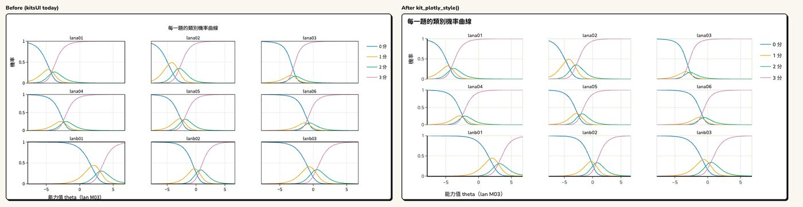
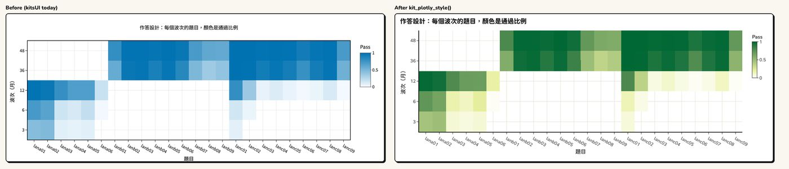
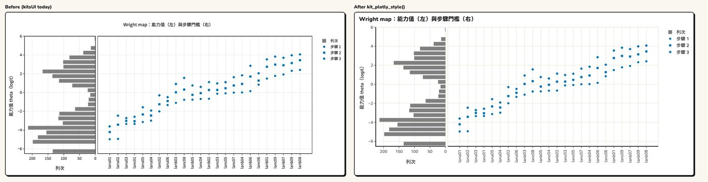
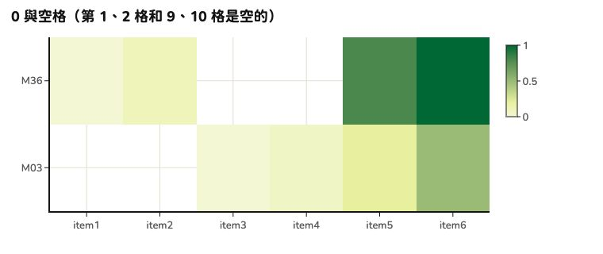

Pass a plotly chart drawn by kits (for example
plot(item, type = "category")) to
kit_plotly_style() as the last step: font, axis lines, grid
lines, background, title, legend, color bar, hover labels, and toolbar
all take the KIT look. It changes only the look, not the
data: points, lines, axis ranges, ticks, and hover text stay as
they are.
Before and after
Left: the original chart. Right: after
kit_plotly_style().
Category probability curves (small multiples: the black frame around each panel becomes a light line, and there are no frames inside frames)

Response design chart (heat map: switched to the KIT color scale)

Wright map

The lowest value in a heat map is not white, so 0% cells and cells that were not administered (blank) are easy to tell apart.

How to use it
library(kitDesign)
p <- plotly::plot_ly(d, x = ~wave, y = ~score, split = ~cohort,
type = "scatter", mode = "lines+markers")
p <- plotly::layout(p, title = "各世代的分數中位數") # "Median score by cohort"
kit_plotly_style(p)With kits and kitsUI: the order
- Draw the chart with kits’
plot(). - Recolor with kitsUI:
kit_chart_categorical(),kit_chart_role(). - Switch to Chinese labels with kitsUI:
kit_chart_zh(). This must come beforekit_plotly_style():kit_plotly_style()makes titles bold (<b>), and after that the original English titles can no longer be recognized. -
kit_plotly_style()last.
p <- plot(item, type = "category") # 1. kits
p <- kit_chart_zh(kit_chart_categorical(p)) # 2–3. kitsUI: recolor, Chinese labels
kit_plotly_style(p) # 4. lastStyling the same chart twice gives the same result as styling it once. Colors set by kits or kitsUI are kept; only plotly’s own default colors are replaced with Okabe–Ito (colorblind-friendly).
Common options
| Argument | What it does |
|---|---|
legend = "auto" |
Moves the legend to the bottom when it has more than 4 entries or is
too long, or when the chart is narrower than 600px (phones); also
"bottom", "right", "keep"
|
colorscale = FALSE |
Keeps the heat map’s original color scale |
filename = "kit-chart" |
File name for the toolbar’s “Download as PNG” |
font_size = 15 |
Body text size (px); other sizes are derived from it |
brand = |
Heat map color scale follows the brand (see Using another brand) |
Colors: categorical colors kit_chart_colors(), reference
lines kit_chart_neutral(), continuous values
kit_chart_sequential().